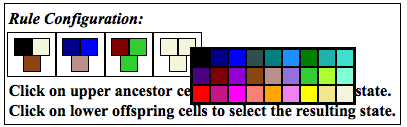
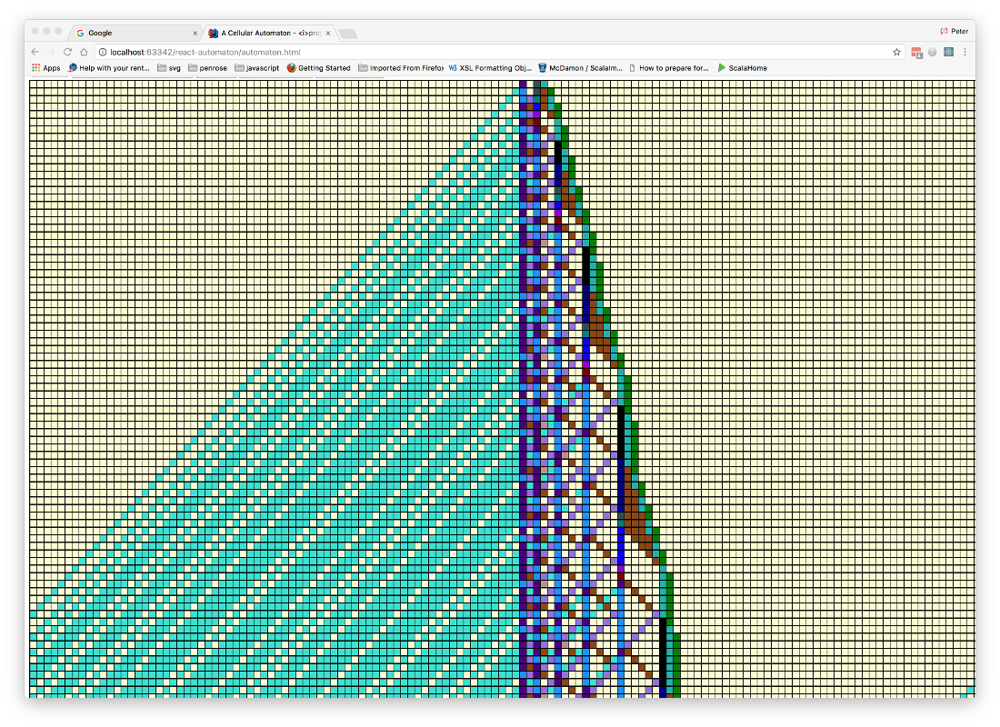

Build and store (via cookies) cellular automata with either 2 (diadic), or 3 (triadic), ancestor cells. Each of the cells in a generation may take one of 27 states with cell states represented by colour.
Hover the mouse pointer over a rule cell to see the name of its colour. Click on rule cells to choose the cell's new colour and thereby alter its state. Similarly, click on cells in the first generation to alter their state too.
Click down on a rule and drag to the left or right of the rule and it will be moved up or down in precedence accordingly.
 Each rule has 2 or 3 (dyadic or triadic) ancestor cells resulting in a single result cell which will take its place in the next generation.
Cells coloured white have special significance: a white ancestor cell will match any other colour when the program checks to see if a rule can be applied, but changing a rules result cell to white will delete the rule.
The rules have a left to right precedance, so the last rule in the set is a 'catch all' with only white ancestor cells and will therefor always match any stimulus. The result cell colour of the last rule is then seen as a background colour when the generation starts.
Change any of the ancestor cells in the last rule and a new default rule is appended to the rule set. Developing a set of rules takes some practice and occassionaly a change of cell colour that you choose will not be allowed - that probably means you were inadvertantly trying to make a duplicate rule.
Sometimes you may add a new rule and find that when you run the automaton the new rule has no effect. In this case your new rule may be ineffective because a rule of higher precedance is shadowing the new rule, so click and hold the mouse down then drag the rule right of left to alter its precedence.
An automaton configuration consists of a set of rules that define how successive generations derive from a first generation - these configurations can be stored locally in cookies. 3 sample configurations are provided by the program; they can all be used by as starting points for development of new configurations.
In general try hovering the mouse pointer and clicking on different elements to discover how the automaton can be controlled.
The 'Wolfram Primes' automaton can be found via the dropdown list of configurations and confirms the veracity of the program by duplicating Steven Wolfram's cellular automata for computing primes.
Note that the shape of the generation space is toroidal; each generation, although displayed as a strip, is actually modeled internally as a band i.e. joined at the ends.